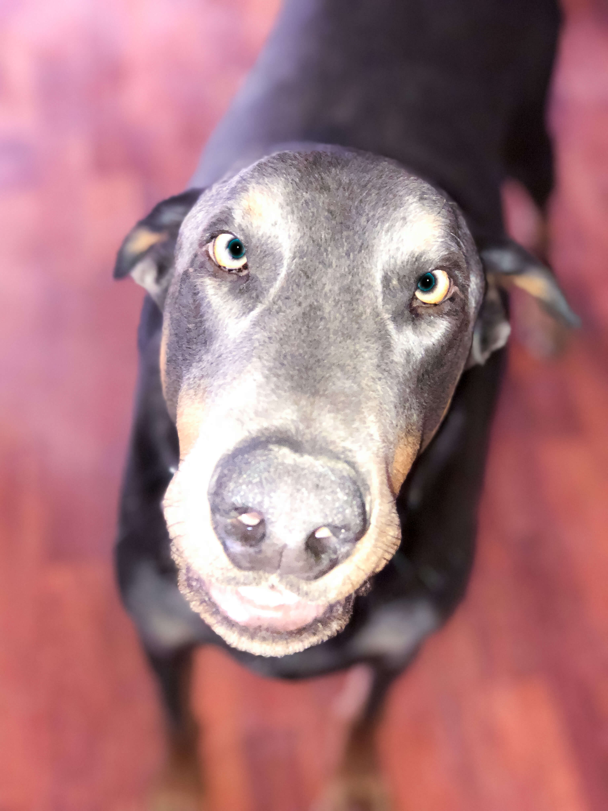

About me
My name is Melanie Brown and I am proud to welcome you to my biography page. I have had a full life.
In my early years, we moved around some, as my Dad was in the Navy. Once he retired, we ended up in rural Southern Missouri for a while.
My dad decided he wanted to go to electronics school in Kansas City, Missouri, so when I was 11, we moved there.
My dad built our first computer from the ground up while he was going through school. Learning how to use the computer, understanding MS-DOS, were all things that have influenced my love for computers.
I have played with old computers, taking them apart and replacing parts to make them work (albeit slowly), and learned a lot along the way.
I have taken classes by Google, as well as classes through the University of Michigan through the Coursera Platform to learn how to create these beautiful pages.
I have been married to my wonderful husband for over 20 years. I am a mother of four. I have one son and three daughters. I am a grandmother (Grammie) to nine, soon to be ten.
My husband and I have two amazing dogs, a blue Doberman named Sabre, and a Rottweiler named Zeke. Zeke is also my husband's service dog. I love going on adventures with my husband and our two dogs. 
My dog, Sabre Blue, a Doberman Pinscher, was the inspiration for #bluedobie Developing. I wanted to make something fun and interesting by building this business. By doing this, I am showing that I am ready to find work that I am passionate about.
I am taking influences from my childhood and meshing them with the fun attitude of my wild Dobie, and this gives us #bluedobie Developing.
